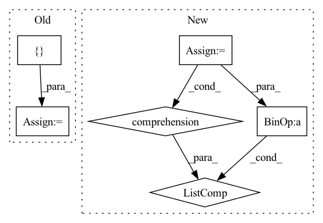

Pattern ID :2682
Before Change
def forward(self, x):
if self.training:
total_blocks = sum([len(sx) for sx in x])
mask_size = torch.Size([ total_blocks *= mask[mask_id]
mask_id += 1
return x, mask
return x, NoneAfter Change
mask_size = torch.Size([X[0].shape[0], sum(blocks_per_mod)])
binomial = torch.distributions.binomial.Binomial(probs=1 - self.p)
mask = binomial.sample(mask_size) * (1.0 / (1 - self.p))
mask_shapes = [list(x.shape[:2]) + [1] * (x.dim() - 2) for x in X]
grouped_masks = torch.split(mask, blocks_per_mod, dim=1)
grouped_masks = [m.reshape(s) for m, s in zip(grouped_masks, mask_shapes)]
X = [x * m for x, m in zip(X, grouped_masks)]
return X, grouped_masks
return X, None
In pattern: SUPERPATTERN
Frequency: 3
Non-data size: 6
Instances Fragment ID: 8781077
Project Name: anita-hu/msaf
Commit Name: a2c91bd6e186680ca2c41bbf22c9b57aff4654d2
Time: 2020-12-30
Author: anitahu113@gmail.com
File Name: MSAF.py
M Class Name: BlockDropout
N Class Name: BlockDropout
M Method Name: forward(2)
N Method Name: forward(2)
M Parent Class: nn.Module
N Parent Class: nn.Module
M File Name: MSAF.py
N File Name: MSAF.py
M Start Line: 40
M End Line: 49
N Start Line: 39
N End Line: 47
Before Change
return nn.Sequential(*layers)
def forward(self, x): // 224x224
features = []
x = self.conv1(x) // 112x112
features.append(x)
x = self.bn1(x)
x = self.relu(x)After Change
Normalizing the features and applying spatial resolution was taken from LPIPS and wasn"t mentioned in the paper.
images = torch.concat([x, x_rec], dim=0) // batch
features = self._forward(images)
features = [f.chunk(2) for f in features]
// diffs = [a * torch.abs(p[0] - p[1]).sum() for a, p in zip(self.alphas, features)]
diffs = [a * torch.abs(p[0] - p[1]).mean() for a, p in zip(self.alphas, features)]
// diffs = [a*torch.abs(self.norm_tensor(tf) - self.norm_tensor(rf)) for a, tf, rf in zip(self.alphas, true_features, rec_features)]
// diffs = [a * torch.mean(torch.abs(tf - rf)) for a, tf, rf in zip(self.alphas, features)]
Fragment ID: 8781075
Project Name: casualganpapers/make-a-scene
Commit Name: 89ba77e885ac1c12ac2d5df5a6b3da842e30bfe0
Time: 2022-05-26
Author: 61938694+dome272@users.noreply.github.com
File Name: losses/face_loss.py
M Class Name: ResNet
N Class Name: ResNet
M Method Name: forward(3)
N Method Name: forward(2)
M Parent Class: nn.Module
N Parent Class: nn.Module
M File Name: losses/face_loss.py
N File Name: losses/face_loss.py
M Start Line: 127
M End Line: 151
N Start Line: 163
N End Line: 177
Before Change
pass
labels = [torch.cat([shared_label, item], 1) for item in zs[1:]]
else:
labels = [ NoneAfter Change
with torch.cuda.amp.autocast() if self.mixed_precision and not eval else misc.dummy_context_mgr() as mp:
if self.MODEL.info_type != "N/A":
if self.MODEL.g_info_injection == "concat":
z = self.info_mix_linear(z)
elif self.MODEL.g_info_injection == "cBN":
z, z_info = z[:, :self.z_dim], z[:, self.z_dim:]
affine_list.append(self.info_proj_linear(z_info))
zs = torch.split(z, self.chunk_size, 1)
z = zs[0]
if self.g_cond_mtd != "W/O":
if shared_label is None:
shared_label = self.shared(label)
affine_list.append(shared_label)
if len(affine_list) == 0:
affines = [item for item in zs[1:]]
else:
affines = [torch.cat(affine_list + [item], 1) for item in zs[1:]]
act = self.linear0(z)
act = act.view(-1, self.in_dims[0], self.bottom, self.bottom)
counter = 0 Fragment ID: 8781081
Project Name: postech-cvlab/pytorch-studiogan
Commit Name: 43b43f14632f9d0b4e18b2d081908bbc7ae2d91d
Time: 2022-01-25
Author: joonghyuk4727@gmail.com
File Name: src/models/big_resnet.py
M Class Name: Generator
N Class Name: Generator
M Method Name: forward(5)
N Method Name: forward(5)
M Parent Class: nn.Module
N Parent Class: nn.Module
M File Name: src/models/big_resnet.py
N File Name: src/models/big_resnet.py
M Start Line: 125
M End Line: 134
N Start Line: 123
N End Line: 143